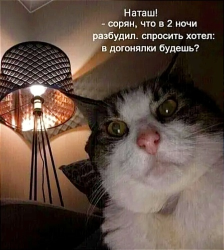

Страница про моего кота

Фото из интернета
В детстве он выглядел примерно так...

Фото из интернета
Кстати, кот достался мне в возрасте почти 5 месяцев,
уже достаточно большим. А теперь он совсем вырос - ему уже 2 года. И стал настоящим красавчиком.
Я люблю своего кота, потому что:
- Он - кот
- Мы нашли друг друга
- Он такой, какой он есть
Еще, мой кот засыпает в самых странных позах...
Но не всё коту масленица...
И несколько мемов, которые буквально срисованы с моего кота...

Напоследок немного полезной инфы...
14 вещей, которые нельзя делать при уходе за кошкой/котом:
- Покупать маленькую миску для еды
- Ставить миску с водой рядом с миской с едой
- Позволять кошке спать на батарее
- Брать котят из домашнего питомника
- Стричь (брить) пушистого кота
- Игнорировать ночной храп
- Оставлять окно открытым в вертикальном положении, когда вы уходите из дома
- Делать кошке «мягкие» лапки (удалять когти)
- Перекладывать кошачий корм в не предназначенные для этого емкости
- Покупать более мелких животных в дом, где уже живет кошка
- Использовать 1 лоток и миску для 2 и более котов
- Принимать кота в семью со старой или бойцовской собакой
- Ругать кота, если он вдруг перестал ходить в лоток
- Закрывать межкомнатные двери
Выполнила Кейзер Наталья,
студентка ЦП | Разработчик. Аналитик | 3 | 3368
17.12.2022